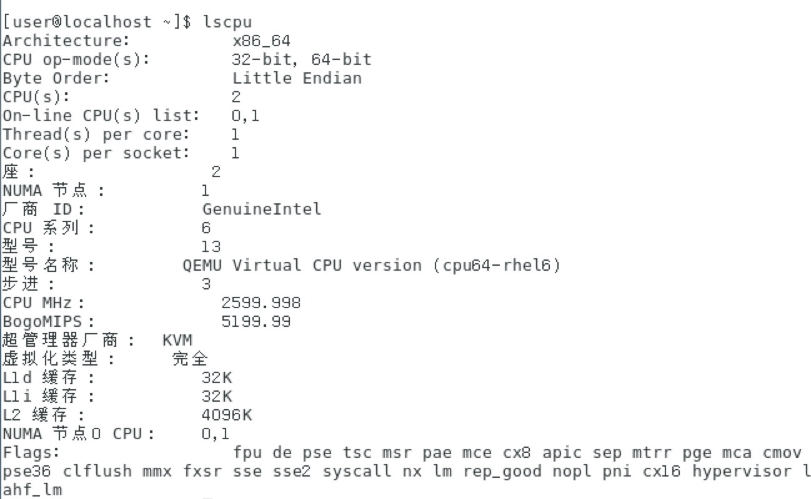
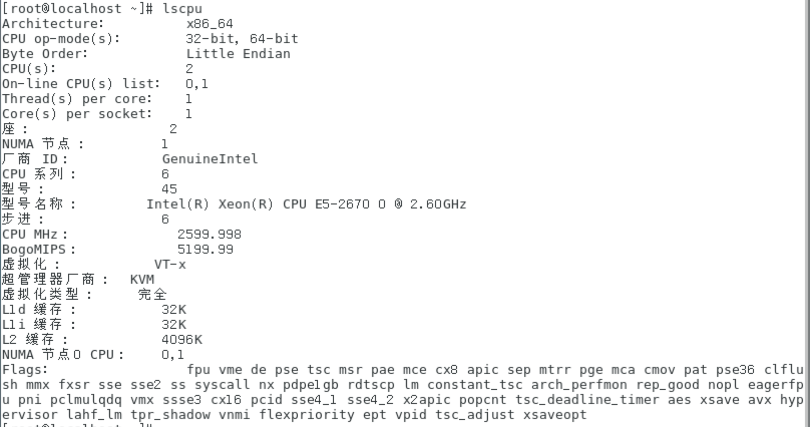
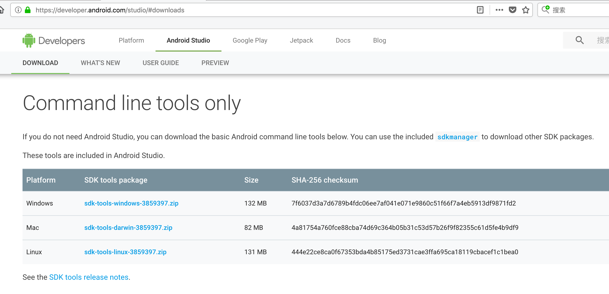

一般情况下，我们在虚拟机中安装安卓的ARM版模拟器，虽然兼容性好，但速度较慢，很影响用户体验，有的时候打开模拟器往往需要三分钟的等待，如果使用x86模拟器，并开启加速功能，将会达到提升用户体验的效果。
但是安装X86模拟器需要CPU开启虚拟化功能，而KVM虚拟机已经是虚拟机了，虚拟机中的CPU默认情况下不带有虚拟化功能，这就需要nested kvm功能了。
需要注意的是安卓x86模拟器的兼容性较差，对于部分应用可能产生崩溃的效果，使用时需要特别注意。
开启nested kvm功能
nested kvm是指kvm支持的一种功能:在虚拟机中再开虚拟机，将host的cpu passthrough到guest上面去，以实现这个效果。
在服务器实体机中使用以下命令查看nested kvm功能是否开启:
1 | cat /sys/module/kvm_intel/parameters/nested |
如果返回是“Y”则表明功能已开启，如果返回为“N”，则按照以下的步骤配置开启该功能：
1 | # 向/etc/modprobe.d/kvm-nested.conf中写入配置 |
此时可以重启服务器，重启后再检查按上面的步骤检查nested kvm功能是否已开始。
确认功能开启后，可继续进行下面的步骤。
配置虚拟机
要让虚拟机使用nested kvm功能，还需要对虚拟机进行一些配置，如果使用libvirt来管理kvm虚拟机，可以在虚拟机的配置xml中添加以下的内容：
1 | <cpu mode='host-passthrough' check='none'/> |
配置完成后重启虚拟机即可。
可以对比下配置前后虚拟机中cpu参数的差别。
修改配置前的cpu参数：

修改配置后的cpu参数：

可以看出配置之后虚拟机中的cpu的flag增加了不少，也支持虚拟化了。
安装模拟器
此时直接在虚拟机中安装X86的模拟器即可。我平时习惯直接用命令行版的工具进行安装，直接前往google开发者网站下载命令行工具，地址为：https://developer.android.com/studio/，在该网站上寻找“Command line tools only”的部分，然后下载自己系统对应的版本即可。

将下载后的工具放置到虚拟机中，解压后即可开始安装，以下是一个简略的安装过程，安装了android4.4的模拟器，其他版本的模拟器可修改对应参数：
1 | # 进入命令行工具目录 |
到了这里模拟器下载结束，同时也创建好了AVD，准备启动吧。
启动模拟器
在模拟器中，因为没有硬件的gpu，可使用如下的命令进行gpu加速：
1 | ./emulator -avd android4.4 -gpu swiftshader_indirect |
享受嗖嗖的速度
使用x86模拟器，操作是非常流畅的，同时由于支持quick boot，模拟器可保存上次关闭时的状态，开机即可直接恢复关机时的状态，也可以使用这个特性，结合kvm虚拟机快照功能，实现更多的玩法。
转载请注明出处:https://knktc.com/2018/06/07/install-android-x86-emulator-in-kvm/